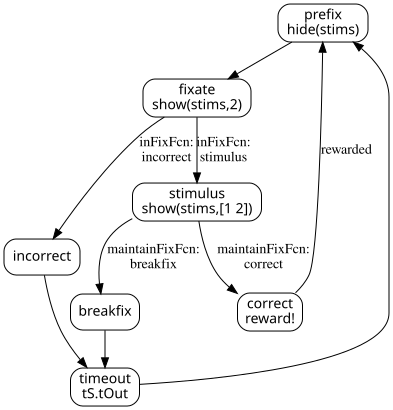

Any experiment can be thought of as a series of states (delay period, initiate fixation, present stimulus, give subject feedback, post-trial timeout, etc.) and conditions for switching between these states. State Machines are a widely used control system for these types of scenarios. The important definition of a state machine is:
next state.transitionFcn), returning a different state name that
forces a transition to this new state.enterFcn), are within
(withinFcn), or exit
(exitFcn) a state.Opticka defines all of this in a StateInfo.m file that
specifies function arrays and assigns them to a state list. The Opticka
GUI visualises the state table and lists out each function array.
For example this cell array identifies two functions which draw and
animate our stims stimulus object. The @()
identifies these as MATLAB function handles:
{ @()draw(stims); @()animate(stims); }Opticka has many core functions that can run during state machine traversal. You can additionally write your own functions and store them in a userFunctions.m class file.
As an example, the DefaultStateInfo.m file defines
several experiment states (prefix, fixate,
stimulus, incorrect, breakfix,
correct, timeout) and how the task switches between
them (either with a timer or transitioned using an eyetracker):

The same state flow shown as an ASCII diagram:
┌───────────────────┐
│ prefix │
┌──────────────────────────────────────────────────▶ │ hide(stims) │ ◀┐
│ └───────────────────┘ │
│ │ │
│ ▼ │
│ ┌───────────┐ inFixFcn: ┌───────────────────┐ │
│ │ incorrect │ incorrect │ fixate │ │
│ │ │ ◀─────────── │ show(stims,2) │ │
│ reward! └───────────┘ └───────────────────┘ │
│ │ │ inFixFcn: │
│ │ │ stimulus │
│ │ ▼ │
┌─────────┐ maintainFixFcn: │ ┌───────────────────┐ │
│ correct │ correct │ │ stimulus │ │
│ │ ◀─────────────────┼─────────────────────── │ show(stims,[1 2]) │ │
└─────────┘ │ └───────────────────┘ │
│ │ maintainFixFcn: │
│ │ breakfix │
│ ▼ │
│ ┌───────────────────┐ │
│ │ breakfix │ │
│ └───────────────────┘ │
│ │ │
│ ▼ │
│ ┌───────────────────┐ │
│ │ timeout │ │
└──────────────────────▶ │ tS.tOut │ ─┘
└───────────────────┘State info files, being plain .m files, should be edited
in the MATLAB editor (the GUI has an edit button that opens the file in
the editor for you).
The state machine is defined as a cell array with 8 columns:
stateInfoTmp = {
'name' 'next' 'time' 'entryFcn' 'withinFcn' 'transitionFcn' 'exitFcn' 'HED';
...rows for each state...
};| Column | Description |
|---|---|
name |
State name (string). Must be unique. |
next |
Default next state after the time expires. |
time |
Maximum time in seconds before auto-transition to next.
Use Inf for no timeout. |
entryFcn |
Cell array of @() function handles run
once on state entry. |
withinFcn |
Cell array of @() function handles run every
frame while in this state. |
transitionFcn |
Cell array of @() function handles that return a state
name string to force an early transition. Returns '' to
stay in current state. |
exitFcn |
Cell array of @() function handles run
once on state exit. |
HED |
Hierarchical event descriptor tag for this state. |
fixEntryFcn = { @()show(stims, 2); @()draw(stims) };
fixFcn = { @()draw(stims); @()drawPhotoDiodeSquare(s, [0 0 0]) };
inFixFcn = { @()testSearchHoldFixation(eT, 'stimulus', 'breakfix') };
fixExitFcn = { @()updateFixationValues(eT, [], [], [], tS.stimulusFixTime);
@()show(stims); @()trackerMessage(eT, 'END_FIX') };Most Opticka protocols use a common set of standard states. You can add, remove, or rename states as needed for your paradigm.
| State | Purpose | Typical Time |
|---|---|---|
pause |
Task paused, screen blanked, ET stopped | Inf (manual resume) |
prefix / blank / prestim |
Pre-trial setup, ET initialisation, hide stimuli | 0.2–0.5 s |
fixate / fixation |
Subject initiates and holds fixation | Inf (transition-driven) |
stimulus / sample |
Stimulus presentation while maintaining fixation | Inf (transition-driven) |
correct |
Reward + positive feedback | 0.3–1.0 s |
incorrect |
Error feedback | 0.3–0.5 s |
breakfix |
Fixation break feedback | 0.3–0.5 s |
timeout |
Delay after error | 0.5–2.0 s |
calibrate |
Eyetracker calibration | Inf (manual exit) |
drift |
Drift correction | Inf (manual exit) |
offset |
Drift offset | Inf (manual exit) |
override |
Debug override mode (keyboard control) | Inf (manual exit) |
flash |
Full-screen flash (photodiode calibration) | 0.1 s |
showgrid |
1-degree grid display | Inf (manual exit) |
Some protocols add custom states:
| State | Protocol | Purpose |
|---|---|---|
catchtrial |
SaccadePhosphene | Catch trial with no visual target |
exclusion |
SaccadePhosphene | Entered an exclusion zone |
delay |
DMTS | Blank delay period between sample and choice |
choice |
DMTS | Choice array with target + distractors |
magstim |
DotDirection, DotColour | Magnetic stimulation trigger |
tS StructureThe tS structure is created in the state info file and
holds all the settings and constants used throughout the experiment.
Common fields include:
| Field | Description |
|---|---|
tS.name |
Protocol name |
tS.saveData |
Whether to save data after each trial |
tS.useTask |
Whether to use the task sequence |
tS.includeErrors |
Whether to advance the task on errors
(vs. resetRun) |
tS.enableTrainingKeys |
Enable arrow-key stimulus adjustment |
tS.keyExclusionPattern |
Key names to exclude from task control |
tS.CORRECT / tS.INCORRECT /
tS.BREAKFIX |
Numeric codes for trial results |
tS.correctSound / tS.errorSound |
Sound frequency for feedback beeps |
tS.fixX / tS.fixY |
Fixation window centre position (degrees) |
tS.firstFixInit |
Time allowed to search for fixation window |
tS.firstFixTime |
Required fixation hold time |
tS.firstFixRadius |
Fixation window radius |
tS.stimulusFixTime |
Fixation hold time during stimulus |
tS.strict |
Strict fixation mode (cannot leave window) |
tS.tOut |
Timeout duration after errors |
State info files often conditionally assemble function arrays based
on tS settings. This allows a single state file to support
multiple experimental modes.
When tS.includeErrors is true, errors
advance the task sequence. When false,
resetRun(task) is called instead, randomising within the
current block:
exitFcn = { @()updatePlot(bR,me); @()updateVariables(me); @()update(stims);
@()resetAll(eT); @()plot(bR,1) };
if tS.includeErrors
incExitFcn = [ { @()logRun(me,'INCORRECT'); @()updateTask(me,tS.INCORRECT) }; exitFcn ];
breakExitFcn = [ { @()logRun(me,'BREAK_FIX'); @()updateTask(me,tS.BREAKFIX) }; exitFcn ];
else
incExitFcn = [ { @()logRun(me,'INCORRECT'); @()resetRun(task) }; exitFcn ];
breakExitFcn = [ { @()logRun(me,'BREAK_FIX'); @()resetRun(task) }; exitFcn ];
endWhen tS.useTask is true, check if the task has ended
after each trial:
if tS.useTask || task.nBlocks > 0
correctExitFcn = [ correctExitFcn; {@()checkTaskEnded(me)} ];
incExitFcn = [ incExitFcn; {@()checkTaskEnded(me)} ];
breakExitFcn = [ breakExitFcn; {@()checkTaskEnded(me)} ];
endUse trialVar or blockVar to dynamically
choose the next state:
% In tS setup:
task.trialVar.values = {'stimulus', 'catch'};
task.trialVar.probability = [0.8 0.2];
% In fixate transition:
@()updateNextState(me, 'trial')
@()testSearchHoldFixation(eT, sM.tempNextState, 'incorrect')When the task ends (all blocks complete), the state machine loops
back from
correct/incorrect/breakfix to
prefix. But we don’t want the exit functions (which update
the task) to run again. skipExitStates prevents this:
sM.skipExitStates = { ...
'correct', 'prefix'; ...
'incorrect', 'prefix'; ...
'breakfix', 'prefix' ...
};When transitioning from any of these states to
prefix, the exit functions are skipped.
see METHODS for more details.